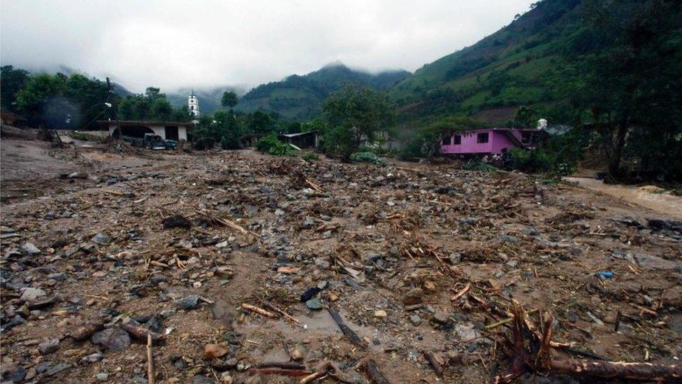
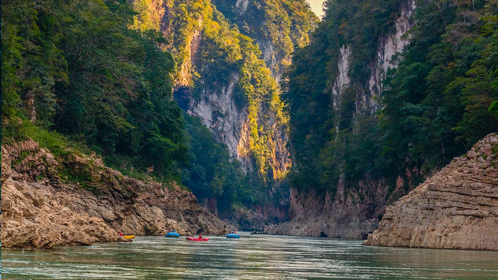
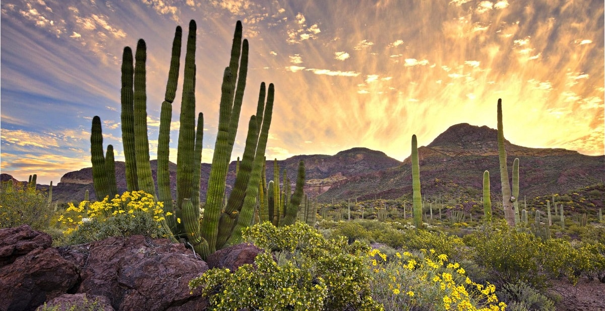
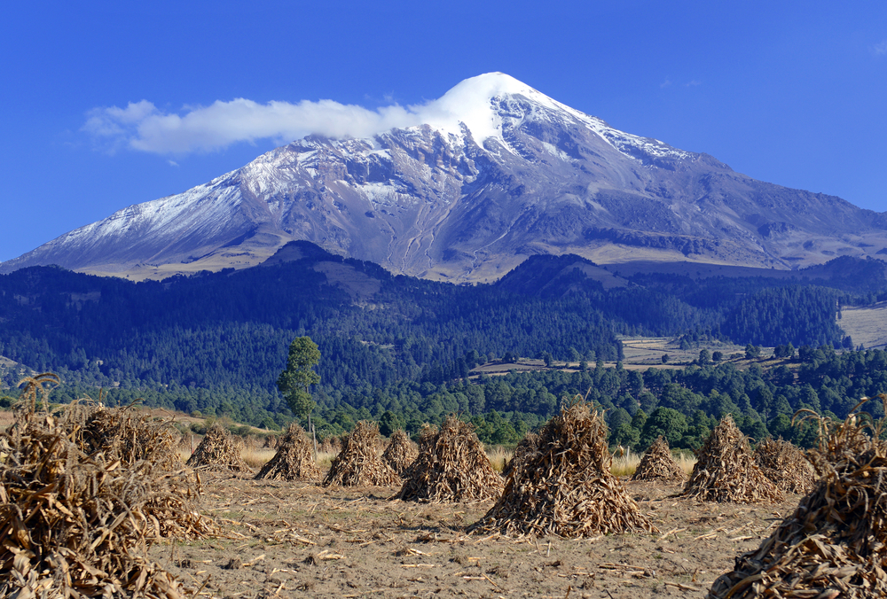

Mexico’s dramatically diverse topography is a masterpiece carved by relentless exogenous processes (Lugo-Hubp, 2011). From the arid deserts of the north to the humid, tropical jungles of the south, the forces of weathering, mass wasting, and erosion continuously redefine the nation's economic, social, and physical landscapes (Lugo-Hubp, 2011).
Video: Exploring the physical geography, climate zones, and dramatic topography of Mexico.

Chemical Weathering: In the Yucatán Peninsula, extensive limestone bedrock experiences intense carbonation, a chemical weathering process where acidic rainwater dissolves the rock (Lugo-Hubp, 2011). This creates a vast karst topography featuring underground rivers and iconic sinkholes known as cenotes (Lugo-Hubp, 2011).
Mass Wasting: The steep, mountainous terrains of the Sierra Madre and heavy seasonal rains make Mexico highly susceptible to landslides (CENAPRED, 2020). A tragic example is the 1999 Teziutlán landslide in Puebla, triggered by extreme rainfall, which buried neighborhoods and claimed over 250 lives (CENAPRED, 2020).
Government Action: To mitigate these risks, the Mexican government utilizes CENAPRED (National Center for Disaster Prevention) (CENAPRED, 2020). They developed the National Risk Atlas to map vulnerable slopes and implement early warning systems to evacuate communities before heavy storms hit (CENAPRED, 2020).

While local splash or sheet erosion impacts localized farming, major river systems severely impact regional economies (CONAGUA, 2021). The Usumacinta River is Mexico's largest by discharge volume (CONAGUA, 2021).
Socio-Economic Impacts: The meandering and lateral erosion constantly shifts property boundaries, destroys fertile agricultural land along the cut banks, and poses severe flood risks to communities in Tabasco (CONAGUA, 2021).
Government Action: CONAGUA (National Water Commission) combats streambank erosion and flooding by dredging the riverbeds, constructing levees, and installing riprap (rock armor) to stabilize vulnerable outer meander bends (CONAGUA, 2021).

Wind Erosion: Mexico experiences severe wind erosion, particularly in its arid northern states, stripping valuable topsoil and reducing agricultural productivity (UNCCD, 2019). The government agency CONAFOR (National Forestry Commission) mitigates this by planting windbreaks and supporting reforestation initiatives (UNCCD, 2019).
Major Deserts: Deserts drastically limit water availability and dictate agriculture in the north (UNCCD, 2019).
Desertification: Yes, desertification is a severe and growing problem (UNCCD, 2019). Over 60% of Mexico's land is considered degraded due to overgrazing, deforestation, and climate change, threatening food security and pushing rural populations toward urban migration (UNCCD, 2019).

Though associated with warm climates, Mexico's highest volcanic peaks were historically heavily glaciated (Cortés & Delgado-Granados, 2015). Today, they are retreating at alarming rates (Cortés & Delgado-Granados, 2015).
Current & Ancient Influence: Ancient Pleistocene glaciers carved distinct features like U-shaped valleys, moraines, and cirques into peaks like Iztaccíhuatl and Popocatépetl (Cortés & Delgado-Granados, 2015). Today, the only significant surviving glacier is the Jamapa Glacier on Pico de Orizaba (Citlaltépetl) (Cortés & Delgado-Granados, 2015).
Impact of Remaining Features: These glaciers serve as vital freshwater reservoirs during dry seasons for downstream communities and agricultural sectors in Veracruz and Puebla (Cortés & Delgado-Granados, 2015). However, due to global climate change and recent volcanic activity (which eradicated Popocatépetl's glaciers in the early 2000s), their rapid disappearance presents a looming crisis for regional water security (Cortés & Delgado-Granados, 2015).